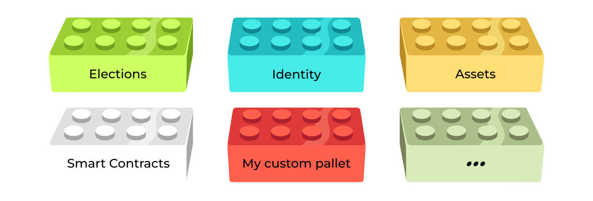
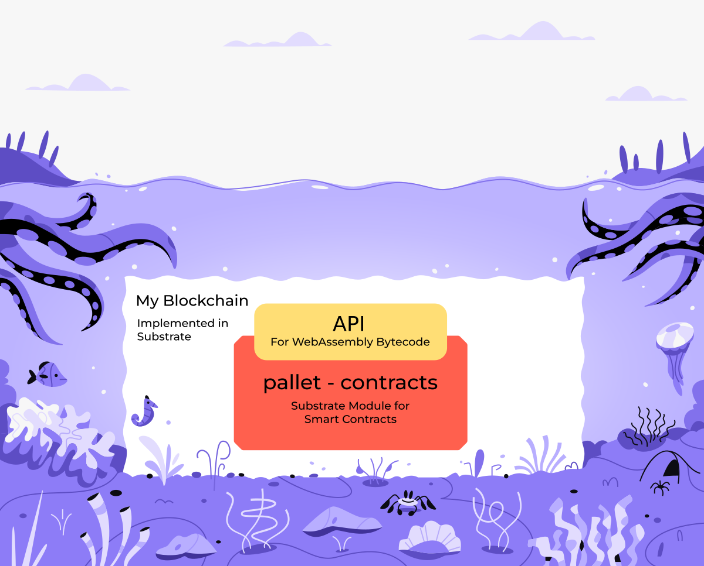
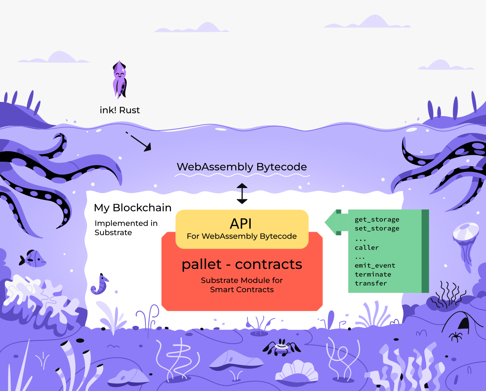
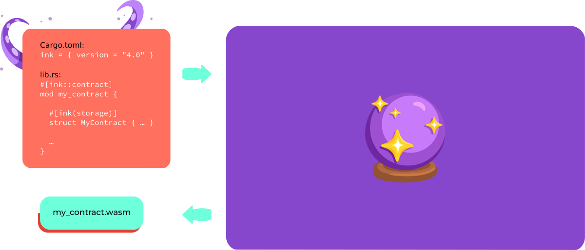
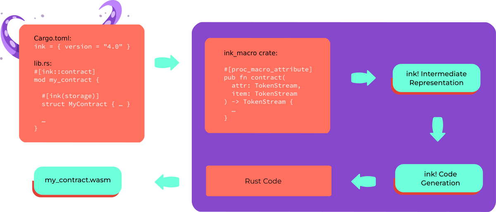
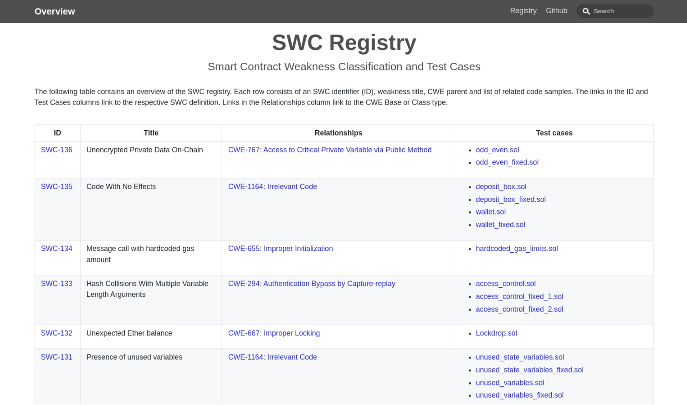

<!DOCTYPE html>
<html lang="en">

<head>
  <meta charset="utf-8" />
  <meta name="viewport" content="width=device-width, initial-scale=1.0, maximum-scale=1.0, user-scalable=no" />

  <title>ink!</title>
  <link rel="shortcut icon" href="./../../assets/favicon.ico" />
  <link rel="stylesheet" href="./../../dist/reset.css" />
  <link rel="stylesheet" href="./../../dist/reveal.css" />
  <link rel="stylesheet" href="./../../assets/styles/PBA-theme.css" id="theme" />
  <link rel="stylesheet" href="./../../css/highlight/shades-of-purple.css" />

  <link rel="stylesheet" href="./../.././assets/styles/custom-classes.css" />

</head>

<body class="site">
  <header class="site-header">
    <!-- This logo is a link only on the watching server, not the production build -->
      
  </header>
  <main class="reveal">
    <article class="slides">
      <section  data-markdown><script type="text/template">


</script></section><section  data-markdown><script type="text/template">
<pba-cols>
<pba-col>

### Agenda

</pba-col>
<pba-col>

|          |        |                    |
| -------- | ------ | :----------------- |
| Today    | 1pm    | ink! Intro         |
|          | 2pm    | Activity           |
|          | 3:30pm | Hints for tomorrow |
|          |        | &nbsp;             |
| Tomorrow | 1pm    | We help you        |
|          | 2pm    | Game               |
|          | 3:30pm | Perfect Solutions  |
</script></section><section  data-markdown><script type="text/template">
## How does ink! tie into Substrate?


</script></section><section  data-markdown><script type="text/template">
## How does ink! tie into Substrate?


</script></section><section  data-markdown><script type="text/template">

</script></section><section  data-markdown><script type="text/template">

</script></section><section  data-markdown><script type="text/template">

</script></section><section  data-markdown><script type="text/template">

</script></section><section  data-markdown><script type="text/template">

</script></section><section  data-markdown><script type="text/template">

</script></section><section  data-markdown><script type="text/template">


<aside class="notes"><p>Smart Contract vs. Parachain
Parachain:</p>
<ul>
<li>Only requirement: Minimal Polkadot API</li>
<li>Trusted Code</li>
</ul>
<p>Smart Contracts:</p>
<ul>
<li>Untrusted Code</li>
<li>Requires Metering</li>
<li>Fixed payment paradigm (gas fees)</li>
</ul>
</aside></script></section><section  data-markdown><script type="text/template">
## Use Case 1


<aside class="notes"><ul>
<li>Motivation</li>
<li>Use Case 1: Wrap Pallet</li>
<li>Smart Contracts as “first class citizen”<ul>
<li>➜ Smart Contract Parachain + $UVP_for_Contracts</li>
</ul>
</li>
</ul>
</aside></script></section><section  data-markdown><script type="text/template">
## Use Case 2


<aside class="notes"><ul>
<li>Use Case 2: Expose Business Logic</li>
<li>Smart Contracts as “second class citizen”<ul>
<li>➜ Parachain adding customizability for its business logic</li>
</ul>
</li>
</ul>
</aside></script></section><section  data-markdown><script type="text/template">
## Use Case 3


<aside class="notes"><ul>
<li>Use Case 3: Embrace Prototyping</li>
<li>Prototyping before going for own parachain</li>
</ul>
</aside></script></section><section  data-markdown><script type="text/template">
# The ink! language

<aside class="notes"><p>Just Rust
Debugging, Testing, Tooling, clippy, cargo fmt, fuzzing</p>
</aside></script></section><section  data-markdown><script type="text/template">
## `Cargo.toml`

```toml [1-9|2|4-5|7-8]
[dependencies]
ink = { version = "4.0.0-rc", default-features = false }

# Encoding/Decoding
scale = { package = "parity-scale-codec", ... }

# Metadata
scale-info = { version = "2", ... }
```
</script></section><section  data-markdown><script type="text/template">
<div style="font-size: 0.82em;">

```rust [1-48]

mod my_contract {

    struct MyContract {
        value: bool,
    }

    impl MyContract {

        fn new() ➜ Self {
            MyContract { value: true }
        }


        fn get(&self) ➜ bool {
            self.value
        }


        fn flip(&mut self) {
            self.value = !self.value;
        }
    }
}
```

</div>

<aside class="notes"><p>Hello ink!</p>
</aside></script></section><section  data-markdown><script type="text/template">
<div style="font-size: 0.82em;">

```rust [1,3,9,14,19|1-30|1-2|3-6|9-12|14-17|19-22]
#[ink::contract]
mod my_contract {
    #[ink(storage)]
    struct MyContract {
        value: bool,
    }

    impl MyContract {
        #[ink(constructor)]
        pub fn new() ➜ Self {
            MyContract { value: true }
        }

        #[ink(message)]
        pub fn get(&self) ➜ bool {
            self.value
        }

        #[ink(message)]
        pub fn flip(&mut self) {
            self.value = !self.value;
        }
    }
}
```

</div>
</script></section><section  data-markdown><script type="text/template">
```rust
#![cfg_attr(not(feature = "std"), no_std)]

#[ink::contract]
mod my_contract {

  // -- snip --

}
```
</script></section><section  data-markdown><script type="text/template">
## Idiomatic Rust

```rust
#[ink(message)]
pub fn do_it(&self) -> Result<(), Error> {
  // Transaction will be reverted
  Err(Error:OhNo)
}
```
</script></section><section  data-markdown><script type="text/template">
## Trait Definitions

```rust
#[ink::trait_definition]
pub trait BaseErc20 {

  #[ink(message)]
  fn total_supply(&self) -> Balance;

  // -- snip --
}
```

<aside class="notes"><p>Can be implemented by multiple contracts.</p>
</aside></script></section><section  data-markdown><script type="text/template">
## Environment

```rust
pub enum DefaultEnvironment {}

impl Environment for DefaultEnvironment {
    const MAX_EVENT_TOPICS: usize = 4;

    type Balance = u128;
    type Timestamp = u64;
    type BlockNumber = u32;
    // --snip--
}
```
</script></section><section  data-markdown><script type="text/template">

</script></section><section  data-markdown><script type="text/template">
## Unit Tests

```rust
#[cfg(test)]
mod tests {

    #[test]
    fn default_works() {
        let flipper = Flipper::default();
        assert_eq!(flipper.get(), true);
    }

}
```
</script></section><section  data-markdown><script type="text/template">
## Integration Tests

<div style="font-size: 0.95em;">

```rust [1-5,17,19|6-9|11-12|14-15]
#[cfg(test)]
mod tests {

    #[ink::test]
    fn default_works() {
        // given
        let my_contract = MyContract::default();
        let accounts =
            ink::env::test::default_accounts::<ink::env::DefaultEnvironment>();

        // when
        ink::env::test::set_value_transferred::<ink::env::DefaultEnvironment>(10);

        // then
        assert!(my_contract.received_ten());
    }

}
```

</div>
</script></section><section  data-markdown><script type="text/template">
## E2E Tests

```rust [1-30|1-2|3-4|6-11|1-20]
#[ink_e2e::test]
async fn default_works(mut client: ink_e2e::Client<C, E>) -> E2EResult<()> {
    // given
    let constructor = FlipperRef::new_default();

    // when
    let contract = client
        .instantiate("flipper", &ink_e2e::bob(), constructor, 0, None)
        .await
        .expect("instantiate failed")
        .account_id;

    // --snip--

    Ok(())
}
```

<aside class="notes"><p>When the function is entered, the contract was already
built in the background via <code>cargo contract build</code>.
The <code>client</code> object exposes an interface to interact
with the Substrate node.</p>
</aside></script></section><section  data-markdown><script type="text/template">
# `$ cargo contract`

[https://github.com/paritytech/cargo-contract](https://github.com/paritytech/cargo-contract)
</script></section><section  data-markdown><script type="text/template">

</script></section><section  data-markdown><script type="text/template">

</script></section><section  data-markdown><script type="text/template">

</script></section><section  data-markdown><script type="text/template">
## Metadata?


</script></section><section  data-markdown><script type="text/template">
# ink!-ternals


</script></section><section  data-markdown><script type="text/template">
# ink!-ternals


</script></section><section  data-markdown><script type="text/template">
# ink!-ternals


</script></section><section  data-markdown><script type="text/template">
# ink!-ternals


</script></section><section  data-markdown><script type="text/template">
# ink!-ternals


</script></section><section  data-markdown><script type="text/template">
## Local Development


[`substrate-contracts-node`](https://github.com/paritytech/substrate-contracts-node)
</script></section><section  data-markdown><script type="text/template">
## Testnet


[Rococo Testnet](https://ink.substrate.io/testnet)
</script></section><section  data-markdown><script type="text/template">
## Developer UIs

<div class="flex-container">
<div class="left"> <!-- Gotcha: You Need an empty line to render MD inside <div> -->


[https://contracts-ui.substrate.io](https://contracts-ui.substrate.io)

</div>
<div class="right"> <!-- Gotcha: You Need an empty line to render MD inside <div> -->


[https://polkadot.js.org/apps](https://polkadot.js.org/apps)

</div>
</div>
</script></section><section  data-markdown><script type="text/template">
## Developer UIs


</script></section><section  data-markdown><script type="text/template">
## Documentation


[www.use.ink](https://use.ink)
</script></section><section  data-markdown><script type="text/template">

</script></section><section  data-markdown><script type="text/template">
## Documentation


</script></section><section  data-markdown><script type="text/template">
# Building a Dapp on ink!
</script></section><section  data-markdown><script type="text/template">
## Reading Contract Values: RPC


</script></section><section  data-markdown><script type="text/template">
## Reading Contract Values: Events


</script></section><section  data-markdown><script type="text/template">

</script></section><section  data-markdown><script type="text/template">
## Security Comparison Solidity
</script></section><section  data-markdown><script type="text/template">
<div class="flex-container">
<div class="left">

<br/>

</div>
<div class="right fragment" data-fragment-index="2" style="margin-left: 50px;">


- Built-in re-entrancy protection
- Fine-grained control

</div>
</div>

<aside class="notes"><p>Re-entrancy Protection</p>
</aside></script></section><section  data-markdown><script type="text/template">
<div class="flex-container">
<div class="left">


```solidity
pragma solidity 0.7.0;

contract Lottery {

  function withdrawWinnings() {
    require(msg.sender = …);
    _sendWinnings(msg.sender);
  }

  function _sendWinnings() {
    msg.sender.transfer(this.balance);
  }

}
```

</div>
<div class="right fragment" data-fragment-index="2" style="margin-left: 50px;">


- Functions private by default
- Needs to be annotated explicitly
- Required: `pub` + `#[ink(message)]`

</div>
</div>
</script></section><section  data-markdown><script type="text/template">

</script></section><section  data-markdown><script type="text/template">


<br/>


<aside class="notes"><ul>
<li>Mutating values</li>
<li>Ownership &amp; Borrow checker</li>
</ul>
</aside></script></section><section  data-markdown><script type="text/template">
<!-- .slide: data-background="../../assets/img/6-FRAME/6.5-Smart_Contracts/ink/Questions_2.svg"" -->
</script></section>
    </article>
  </main>

  <script src="./../../dist/reveal.js"></script>

  <script src="./../../plugin/markdown/markdown.js"></script>
  <script src="./../../plugin/highlight/highlight.js"></script>
  <script src="./../../plugin/zoom/zoom.js"></script>
  <script src="./../../plugin/notes/notes.js"></script>
  <script src="./../../plugin/math/math.js"></script>
  <script>
    function extend() {
      var target = {};
      for (var i = 0; i < arguments.length; i++) {
        var source = arguments[i];
        for (var key in source) {
          if (source.hasOwnProperty(key)) {
            target[key] = source[key];
          }
        }
      }
      return target;
    }

    // default options to init reveal.js
    var defaultOptions = {
      controls: true,
      progress: true,
      history: true,
      center: true,
      transition: 'default', // none/fade/slide/convex/concave/zoom
      slideNumber: true,
      plugins: [
        RevealMarkdown,
        RevealHighlight,
        RevealZoom,
        RevealNotes,
        RevealMath
      ]
    };

    // options from URL query string
    var queryOptions = Reveal().getQueryHash() || {};

    var options = extend(defaultOptions, {"width":1400,"height":900,"margin":0,"minScale":0.2,"maxScale":2,"transition":"none","controls":true,"progress":true,"center":true,"slideNumber":true,"backgroundTransition":"fade"}, queryOptions);
  </script>


  <script>
    Reveal.initialize(options);
  </script>
</body>

</html>
